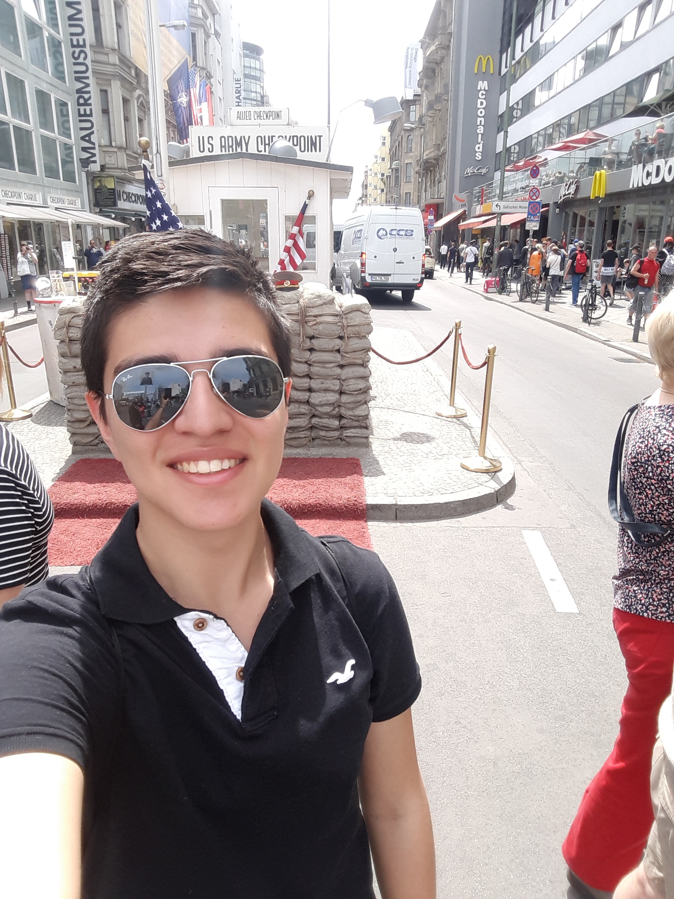

¡Bienvenidos a mi página web!
¡Hola!
Acá podrán encontrar información sobre quien soy, que hago hoy en día, cuales han sido mis logros académicos mas importantes y mi información principal de contacto.
Ultima actualización 19 de Agosto del 2019